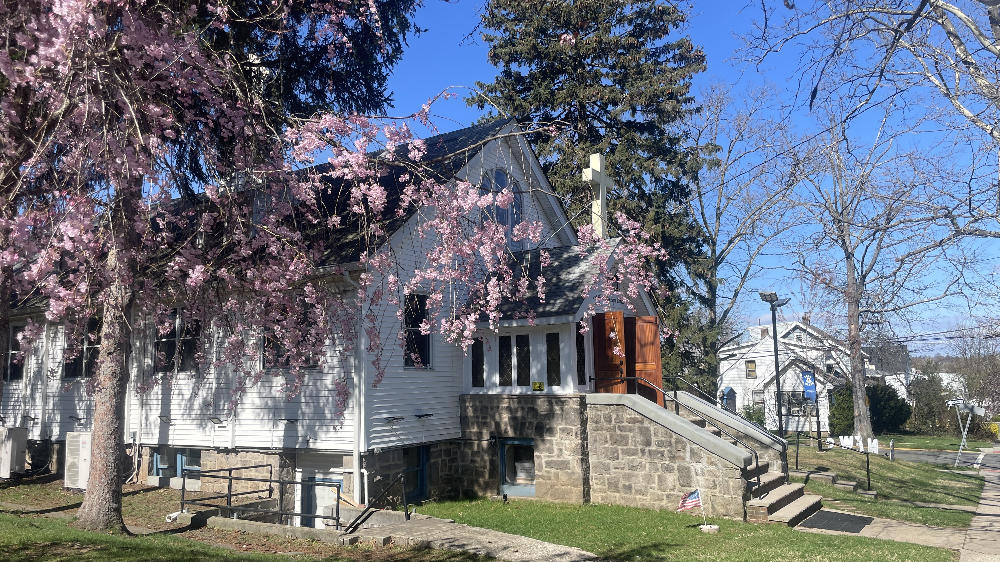

Since 1909
Founded as Union Chapel in 1897 and chartered as First Presbyterian Church in 1909, this congregation has been a beacon in Palisades Park through the Edsall family’s gifts, the Depression, war years, and a multi-ethnic revival since the 1980s.